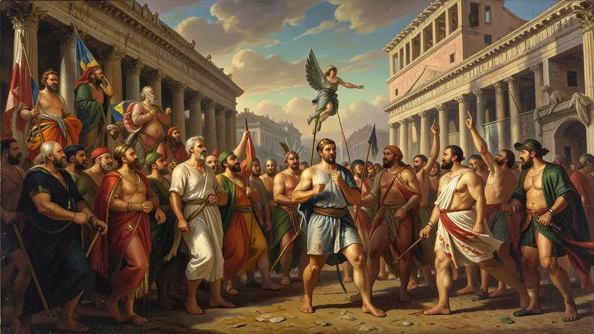
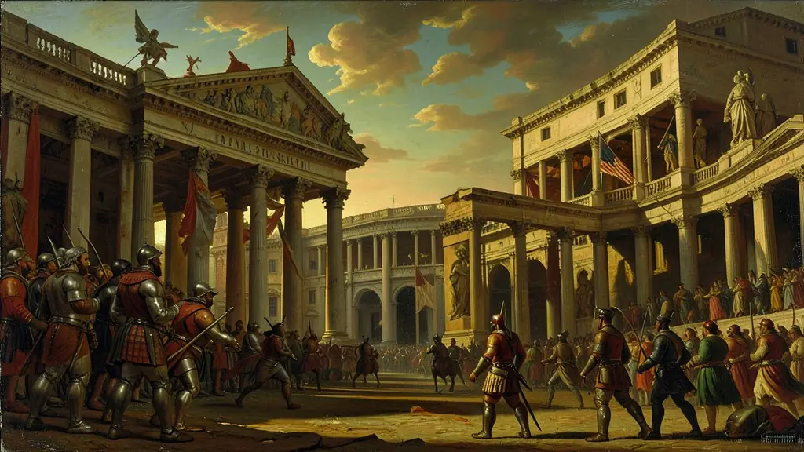
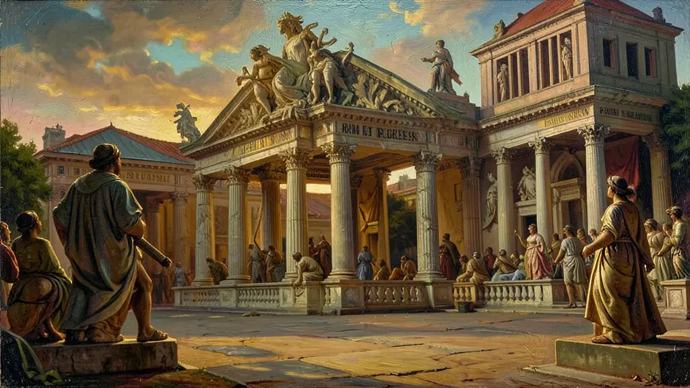

Capítulo 01
1. Conflitos de Classe: Patrícios vs. Plebeus
A base social romana era desigual. Os patrícios detinham as melhores terras e as cadeiras do Senado. Os plebeus, que eram a maioria dos soldados, revoltaram-se diversas vezes, ameaçando sair de Roma e formar sua própria cidade. Disso nasceram os 'Tribunos da Plebe', homens de origem plebeia que podiam vetar decisões do Senado que prejudicassem o povo. Foi o início da luta democrática em Roma.

Capítulo 02
2. Guerras Púnicas e o 'Mare Nostrum'
Roma enfrentou sua maior rival, Cartago (no norte da África), pelo controle do comércio marítimo. Após três guerras exaustivas (na última, o general Aníbal atravessou os Alpes com elefantes), Roma destruiu Cartago e espalhou sal em suas terras. Isso transformou Roma na maior potência escravista do mundo antigo, inundando a cidade com riquezas e mão de obra gratuita capturada nas guerras.

Capítulo 03
3. Panem et Circenses: Controle Social
A expansão de Roma expulsou o pequeno agricultor do campo (latifúndios escravistas), criando uma massa de desempregados em Roma. Para evitar revoluções violentas, os imperadores criaram o Pão e Circo. Estádios monumentais como o Coliseu serviam para distrair o povo de sua miséria enquanto o Imperador distribuía comida. Era o controle das mentes pelo entretenimento violento.

Capítulo 04
4. O Direito Romano: A Ordem pela Lei
O maior legado de Roma não foi militar, mas jurídico. Os romanos criaram noções como 'Presunção de Inocência', 'Divisão de Poderes' e o direito à herança. O 'Corpus Juris Civilis' de Justiniano serviu como base para o código civil de Napoleão e, consequentemente, para o código civil brasileiro. Rome nos deu a gramática da justiça.
Capítulo 05
5. Cristianismo: Da Cruz ao Trono
O cristianismo surgiu nas periferias do Império e pregava a igualdade e o amor, o que subvertia a ordem escravista romana. Nero e outros imperadores perseguiram e crucificaram cristãos. Porém, a fé cresceu tanto que o Imperador Constantino a legalizou (Édito de Milão) e Teodósio a tornou oficial. Roma caiu como império, mas sobreviveu como Igreja Católica nos séculos seguintes.
A transição de Roma de uma pequena cidade-estado para um império mediterrâneo foi sustentada por uma infraestrutura militar e jurídica sem precedentes. O Direito Romano, sistematizado para organizar as complexas relações de propriedade e cidadania em vastos territórios, permanece como o alicerce fundamental dos sistemas jurídicos ocidentais modernos. A capacidade de Roma em integrar povos conquistados através da concessão progressiva da cidadania foi o que permitiu a sobrevivência do império por séculos de forma integrada.
A economia romana no período imperial era dependente de um ciclo contínuo de conquistas que fornecia mão de obra escrava e tributos. Esse modelo, no entanto, continha a semente de sua própria destruição: à medida que as fronteiras se estabilizavam e as conquistas cessavam, o suprimento de escravos diminuía, gerando inflação e a ruralização da economia. O Colono, predecessor do servo medieval, surgiu justamente quando os grandes latifúndios buscaram novas formas de produtividade diante da crise do sistema escravista clássico.
O cristianismo percorreu uma trajetória extraordinária dentro de Roma, passando de seita perseguida (vista como ameaça à divindade do Imperador) para religião oficial com o Édito de Tessalônica em 380 d.C. Essa aliança entre a Igreja e o Estado Romano preservou elementos da cultura clássica durante as invasões germânicas, garantindo que a língua latina e as estruturas administrativas romanas servissem de base para a construção da Europa Medieval, mesmo após a queda formal do Império do Ocidente em 476 d.C.
Fonte: GIBBON, Edward. Declínio e Queda do Império Romano. São Paulo: Companhia das Letras, 2005.
Atividades interativas
Questões para fixar
A política de 'Pão e Circo' (Panem et Circenses), aplicada durante o Império Romano, tinha como objetivo primordial:
O fim da escravidão por dívidas e a criação da Lei das XII Tábuas em Roma foram conquistas de qual classe social?